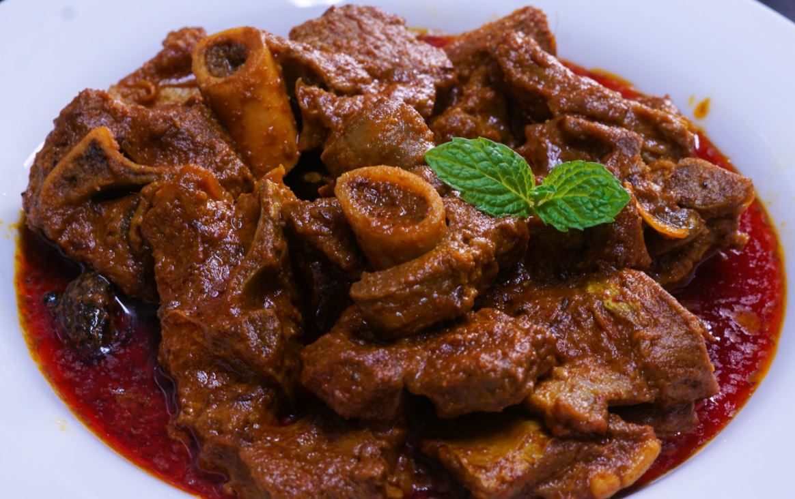

Ingredients
- 500g lamb
- 2 tbsp ghee
- 1 large onion, finely chopped
- 2 tsp ginger-garlic paste
- 1 tsp Kashmiri red chili powder
- 1 tsp turmeric powder
- 1 tsp fennel seeds
- 1 cup yogurt
- Salt to taste
- 2 cups water
Instructions
- Heat ghee in a pan, add the chopped onions, and sauté until golden brown.
- Add ginger-garlic paste and sauté for a minute.
- Add lamb pieces and fry until browned on all sides.
- Mix in the red chili powder, turmeric, and fennel seeds.
- Add yogurt, salt, and water, then cover and simmer until the meat is tender.
- Garnish with fresh coriander and serve hot with steamed rice.